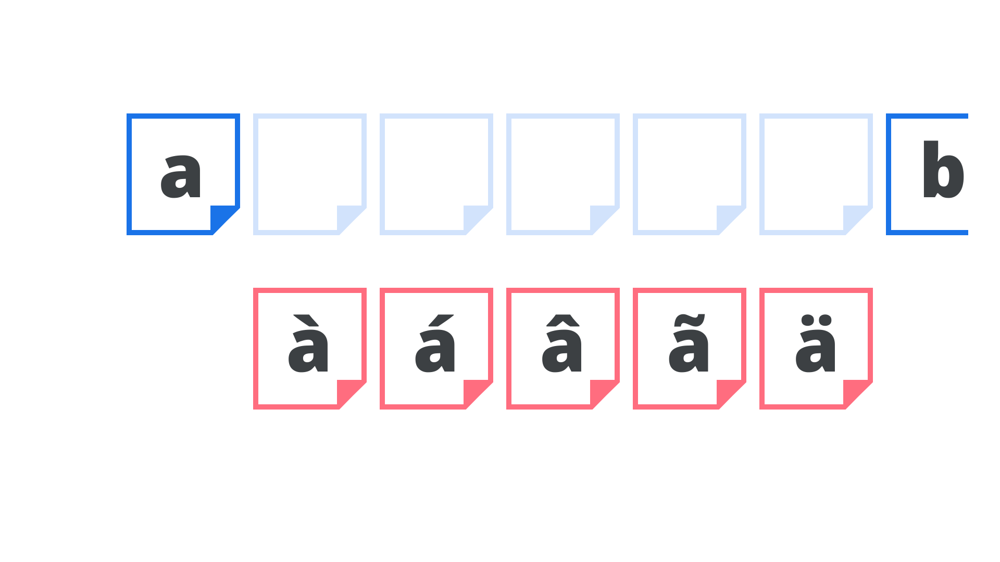

Subsetting
By Google Fonts Knowledge contributors · Google Fonts Knowledge.
Original article · Source on GitHub · CC BY-SA 4.0. Text, illustrations and existing credits reproduced from the licensed Knowledge repository. Open Shelf adapted the layout and links; these adaptations are also CC BY-SA 4.0. No endorsement implied.
Subsetting is the practice of creating a “subset” of a font—a file that contains a custom (and usually limited) collection of glyphs.

There are numerous scenarios where subsetting may be desirable:
- When a font delivery service wishes to optimize the file size of a web font.
- When a foundry wishes to offer a limited character set as a trial font.
- When a developer wishes to strip unrequired languages from a web font.
- When a foundry (or designer) wishes to distribute a collection of glyphs for a specifics use, as was the way with small caps or stylistic sets prior to the arrival of OpenType.
- When a foundry wishes to create a customized collection of glyphs (perhaps with modifications) for a client.
There are many online services that can generate subsets for the user on-the-fly, but it’s important to consider whether a particular font license allows for subsetting or not.